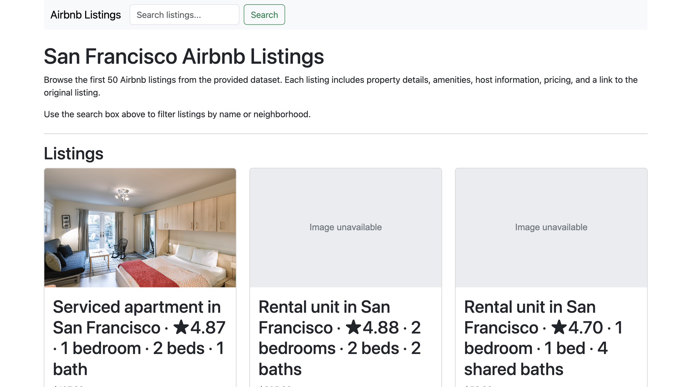
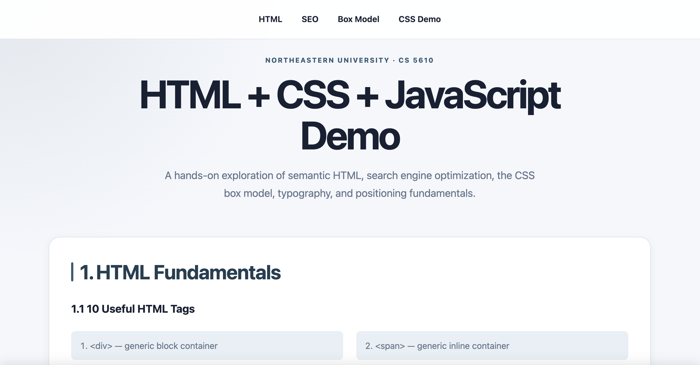

Projects
Things I’m Building
A collection of projects exploring software development,
cybersecurity, web development, automation, and technical
problem-solving.
View My GitHub
Selected Work
Featured Projects
SecretTrace
An offline-first command-line security scanner designed to
identify potentially exposed credentials in source-code
repositories.
What I’m exploring
SecretTrace explores secure secret detection through pattern
matching, entropy analysis, contextual scoring, redaction,
suppression rules, and explainable findings.

Airbnb Listings
A responsive web application that dynamically loads and displays
Airbnb listing data from a JSON dataset.
What I practiced
The project uses asynchronous JavaScript to fetch listing data,
generate cards dynamically, provide search functionality, and
handle unavailable images gracefully.

HTML, CSS & JavaScript Self-Assessment
A CS 5610 project demonstrating foundational web-development
concepts through semantic HTML and CSS.
What I practiced
The project covers semantic page structure, internal navigation,
SEO metadata, the CSS box model, font sizing, positioning, Git
version control, and deployment.
The Personal Index
There’s more than code here.
Return to the homepage to explore my background, interests, current
pursuits, and professional experience.
Back to Home